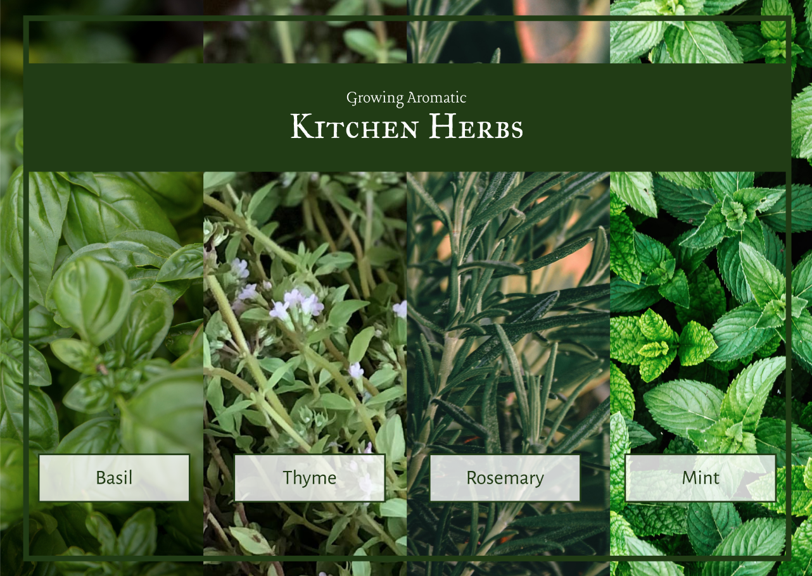
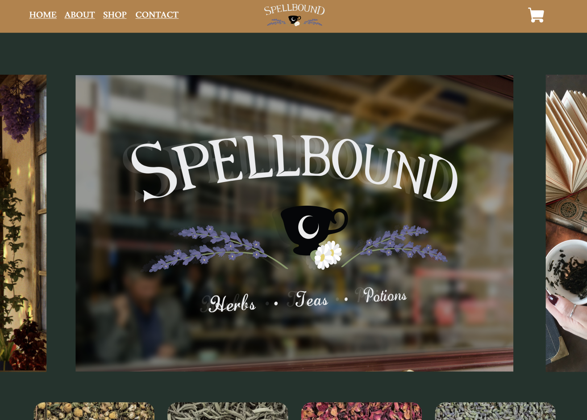

Project 1 - Growing Aromatic Kitchen Herbs
For Project 1, I designed a five page website dedicated to four culinary herbs and how to grow them. This guide offers a simple introductory to Basil, Thyme, Rosemary, and Mint.

Project 2 - Spellbound Cafe
For Project 2, I designed a website for "Spellbound Cafe". The concept, branding, and design for this cafe was created in an earlier class. I took the branding project one step further this term, by creating a website showcasing what a website for it would look like and how it would function.